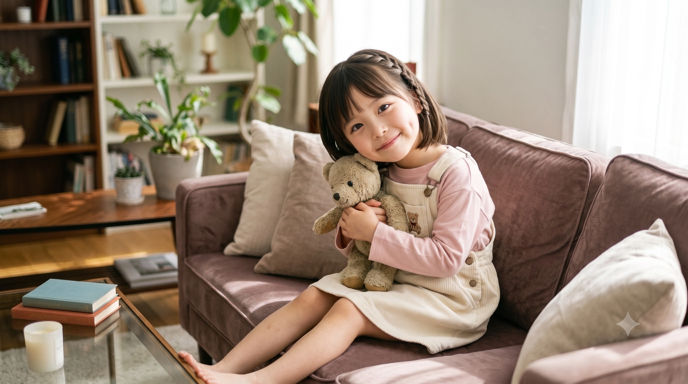
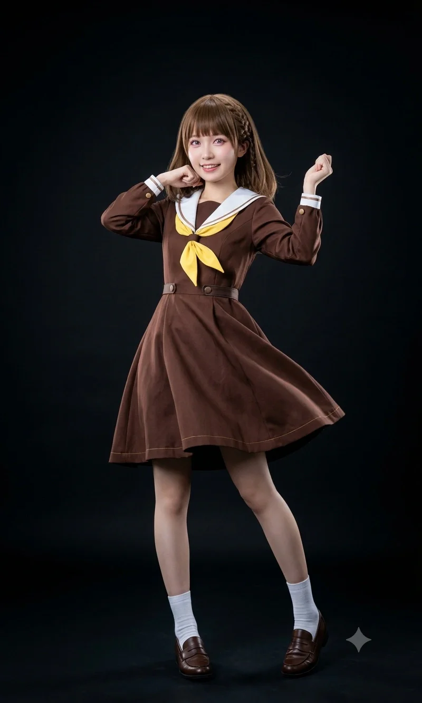

"마음을 빛내는 용기의 뱃지! 도소영의 구호는 체스토-!"
동구대학교 산업디자인학과에 재학 중인 대학생. 작중 'Love Live! Hasunosora Girls' High School Idol Club(하스노소라)'의 104기생 카치마치 코스즈와 완벽하게 일치하는 기믹, 생일, 긍정적인 '체스토' 마인드, 그리고 '10명의 대가족이 한 지붕 아래 부대끼며 산다'는 독특한 설정까지 모두 현실로 구현해 낸 '현실판 코스즈'다.
효빈광역시 '지아센(지역아동센터) 5인방'의 일원으로, 유세라보다 한 살 많은 언니 포지션이다. 평소에는 다람쥐처럼 순하고 소심한 성격의 소유자이지만, 동지들이 위기에 처하거나 모욕을 당할 때는 억눌렸던 분노가 폭발해 물불 가리지 않고 돌진하는 반전 매력을 지녔다.
또한 지아센 5인방 중에서 신체적으로 가장 '평균'에 가까운 체형을 지녔으나, 이는 어디까지나 글래머러스함이 과도하게 발달한 5인방 내부 기준일 뿐이다. (돌케스트라의 코스즈가 그룹 내 평균이지만 절대 작은 편이 아닌 것과 같은 결이다.) 덕분에 시장실 난입 당시 박효빈 시장이 그나마 소영에게 눈을 두려고 시도했으나, 결국 안심하고 시선을 고정할 수 없어 천장 몰딩을 보게 만든 또 다른 원인 제공자이기도 하다.
지금은 언제나 밝게 "체스토-!"를 외치며 목공 작업과 챌린지를 즐기는 에너지 넘치는 미대생이지만, 초등학교 시절에는 아버지의 가구 공장이 사기를 당해 부도나며 10식구가 사복동 단칸방으로 나앉았고, 엎친 데 덮친 격으로 효빈시 최악의 마굴 족포초등학교에서 끔찍한 학교 폭력을 당하며 스스로 삶을 포기하려 했던 가슴 아픈 과거를 지니고 있다. 하지만 방과 후 지역아동센터(지아센)에서 당시 대학생이던 박효빈(현 효빈광역시장)을 멘토로 만나면서 인생이 180도 바뀌었다. 박효빈의 극대노 섞인 보호와 헌신 덕분에 지옥 같던 족포초를 벗어나 당가동으로 무사히 탈출할 수 있었고, 대가족의 끈끈한 사랑 속에서 잃어버렸던 미소와 자신감을 완벽히 되찾았다. 애니 코스즈보다는 그래도 학업에 노력을 더 기울여서 동구대학교 산업디자인학과에 무려 '추추추추추추추추추추추합'이라는 전무후무한 우주의 기운(?)으로 막차를 타고 입학, 현재는 동구대 4인방(오마리, 하마루, 성공린, 오하리)과 어울리며 대학 생활을 100% 즐기고 있다.
이름부터가 우주가 점지해 준 운명이다. 카치마치 코스즈의 한자는 도정 소령(徒町 小鈴)인데, 도소영의 성씨인 '도(都)'가 카치마치(도정)의 앞 글자와 발음이 같고, 이름인 '소영'은 소령(코스즈)과 한 끗 차이로 완벽하게 비슷한 발음을 자랑한다. [1]
애니 코스즈의 생일은 2월 28일(02-28)인데, 도소영의 실제 생일은 이를 정확히 거꾸로 뒤집은 8월 22일(08-22)이다. (이쯤 되면 하화연, 임은혜와 함께 생일 애너그램 3대장이다.)
또한 애니 코스즈가 하스노소라 수험 당시 예비 번호 끝자락으로 아슬아슬하게 합격해 '바보' 취급을 받는 기믹이 있듯, 도소영 역시 자신의 타고난 손재주와 압도적인 실기 깡패 모드로 무장하여 동구대학교 산업디자인학과 수시 실기 전형에 도전했고, 발표일 당일 무려 "추추추추추추추추추추추합(전화 찬스 마감 5분 전)"이라는 기적적인 막차를 타고 합격하는 신화를 썼다. 본인 피셜 "대가족 10명의 염원과 우주의 챌린지 에너지가 나를 도왔다"고 한다. [3]
원작 《러브라이브! 하스노소라》에서 카치마치 코스즈가 부모님, 조부모님, 언니 2명, 삼촌네 가족 등 무려 '10명의 대가족'과 북적이며 산다는 설정이 있는데, 놀랍게도 현실의 도소영 역시 정확히 10명의 친척이 한 지붕 아래 옹기종기 모여 사는 거대한 성주 도씨 대가족의 막내딸이다! [2]
본래 소영이네 가족은 아버지 도기철 씨가 운영하던 중소 가구 공장 덕분에 평범하고 단란하게 살고 있었다. 그러나 소영이가 유치원생이던 무렵, 아버지가 하청을 받던 원청업체(소름 돋게도 윤대환 일가와 연관된 부패 기업)가 고의 부도를 내고 도주하는 바람에 연대보증을 섰던 공장이 하루아침에 날아갔다.
결국 집이 경매로 넘어가고, 아버지의 빚을 갚기 위해 삼촌네 부부까지 전세금을 빼서 합치면서 효빈시 서구 사복동의 낡은 다세대주택(방 3개짜리 빌라)에 할아버지부터 갓난아기 남동생까지 무려 10명의 식구가 짐짝처럼 끼어서 살게 된 것이다. 가난과 빚쟁이의 독촉 속에서도 이 10명의 가족은 누구 하나 불평하지 않고 서로를 껴안으며 버텼고, 이 지독한 가난이 소영이를 마굴 족포초등학교로 밀어 넣는 원인이 되기도 했다.
할아버지 도만식 옹은 40년간 망치질을 해온 베테랑 목수로, 아들 도기철 씨에게 가구 기술을 물려준 장본인이다. 소영이가 산업디자인학과에 진학해 목공예에 천부적인 재능("체스토!")을 보일 수 있었던 것은 할아버지의 유전자를 정통으로 물려받았기 때문이다. 할머니 강순임 여사는 10식구의 대용량 식사를 책임지는 정신적 지주로, 소영이가 족포초 일진들에게 상처받고 올 때마다 따뜻한 숭늉을 끓여주며 눈물을 닦아주셨다.
아버지 도기철 씨는 부도 이후 건설 현장 막노동과 대리운전을 전전하며 10식구를 먹여 살린 우직한 가장이다. 어머니 이명희 여사는 빚을 갚기 위해 사복동 시장 구석에서 작은 백반집을 열어 억척스럽게 일했는데, 도소영 특유의 무한 긍정 마인드와 "체스토!"라는 기합은 바로 어머니 이명희 여사가 매일 새벽 백반집 문을 열며 외치던 화이팅 구호에서 물려받은 것이다!
삼촌 도기태 씨는 형(도기철)이 부도로 길바닥에 나앉게 생기자, 자신의 전세금을 빼서 형의 사채 빚을 막아주고 아내와 함께 사복동 단칸방으로 합가한 의리의 친동생이다. 숙모 박진아 여사는 좁은 집안에서 짜증 한 번 내지 않고 조카들을 자기 자식처럼 거두어 먹인 대인배이자 집안의 최고 분위기 메이커다.
소영의 위로는 도대영(1998년생)과 도소희(2001년생)라는 든든한 방패막이들이 있다. 큰오빠 대영은 집안을 일으키기 위해 대학 진학을 포기하고 상고 졸업 후 바로 중소기업 경리로 취업해 동생들의 학비를 댔고, 큰언니 소희는 족포초 일진들이 소영이를 괴롭힌다는 소식을 듣고 빗자루를 들고 교무실을 엎어버렸던 전설의 여전사다. 아래로는 세 살 어린 늦둥이 남동생 도소준(2010년생)이 있는데, 누나 소영이가 인터넷에서 악플을 받을 때마다 온갖 아이디를 총동원해 키보드 워리어로 빙의하여 악플러들을 패고 다니는 든든한(?) 온라인 보디가드다.

▲ 엘린지역아동센터 시절, 낡은 노트를 안고 상처로 가득했던 어린 도소영
어릴 적 10식구와 함께 효빈시 서구 사복동 낡은 빌라에 살았던 도소영은, 운명의 장난처럼 효빈시 최악의 마굴이자 학교 폭력의 온상인 족포초등학교에 배정받았다. 이놈의 학교는 왜 이쪽 애들만 보면 잡아먹으려 안달인지 모르겠다.
당시 가난과 좁은 집안 환경 탓에 낯가림이 심하고 대인관계에 서툴렀던 소영을, 족포초의 쓰레기 같은 일진 무리들은 먹잇감으로 삼았다. 그들은 소영을 포위하고 "야 장애새끼야, 옷에서 홀아비 냄새나는 년이, 너 자폐지?"라는 입에 담기도 힘든 장애인 비하와 쌍욕을 퍼부으며 매일같이 집단 괴롭힘을 일삼았다. (당연히 소영은 자폐가 아니었으며, 얼굴도 귀여운 다람쥐상 미소녀였다. 정작 본인들이 거울 치료가 시급한 오크들이었다.)
괴롭힘의 수위는 날이 갈수록 잔인해졌다. 그들은 소영의 유일한 안식처이자 도피처였던 스케치북을 빼앗아 눈앞에서 갈기갈기 찢어발겼으며, 화장실에 갈 때마다 실내화를 쓰레기통에 쳐박거나 복도에서 고의로 어깨를 퍽 밀치고 지나가는 물리적 폭력을 일삼았다.
이 잔혹한 폭력을 견디다 못한 소영이 눈물로 범벅이 된 채 교무실로 찾아가 담임 교사에게 살려달라고 매달렸다. 하지만 하필 담임마저 심각한 병신(직무유기 쓰레기)이었다. 교사는 억울해하는 소영을 향해 귀찮다는 듯이 혀를 차며 이렇게 뱉었다. "도소영, 네가 평소에 너무 음침하게 굴고 애들이랑 어울리려고 노력을 안 하니까 애들이 장난치는 거잖아. 별일도 아닌 걸로 선생님 피곤하게 하지 마."
보호받아야 할 유일한 울타리였던 교사의 이 끔찍한 2차 가해와 가스라이팅은 어린 소영의 정신을 완벽하게 붕괴시켰다. 결국 초등학교 3학년의 어린 소영은 "나는 할 수 있는 게 없어. 특기도 없고, 쓸모없는 사람이야. 내가 죽어도 우리 10식구 짐만 덜고 남이 슬퍼나 할까?"라는 극단적인 우울감과 자기 파괴적인 자기암시에 빠지고 말았다. 이 지독한 방관과 절망의 기억은 소영의 영혼을 시커멓게 갉아먹고 있었다.
이 지옥 같은 시기, 소영은 방과 후 엘린지역아동센터(지아센)에 다녔다. 그곳에서 멘토링 알바를 하던 15학번 대학생 박효빈을 처음 만났다. 하지만 어른에 대한 불신이 극에 달해 있던 소영은 벼랑 끝에 몰린 고슴도치처럼 맹수처럼 이를 드러내며 멘토를 밀어냈다. 이때 박효빈은 소영이가 너무 다루기 힘들어 '첫날부터 제대로 현타 온다'며 멘붕에 빠졌다고 한다.
센터 근무가 1주일~4개월 차로 접어들던 시점, 박효빈 역시 한계에 몰려 있었다. 같이 근로장학생으로 온 15학번 동기 '먼지'와 '경영15병신'은 아이들이 밥을 굶든 말든 스마트폰만 쳐다보고, 심지어 사범대와 상경계열이면서 초3 수학 '들이(L, mL)' 문제도 못 푼다며 사회복지학과인 효빈에게 짬처리를 시전하는 폐급 중의 폐급이었다. [4]
극심한 피로와 사내 괴롭힘 속에서도 효빈이 굳은 표정을 풀고 다가가 소영에게 수학 문제집을 펼쳐주려던 날이었다. 억눌려 있던 아이의 절망과 분노가 일순간에 폭발했다. 연필심이 부러지도록 바닥을 찍으며 소영이 핏발 선 눈으로 쏘아붙였다. "왜 자꾸 나한테 귀찮게 굴어요?! 저리 가라고요!! 이딴 거 풀어서 뭐 하는데요?! 구구단 외우면 학교에서 애들이 나더러 장애새끼라고 침 안 뱉어요?! 어차피 난 아무것도 못 하고 평생 쓸모없는 쓰레기로 살 건데, 왜 자꾸 착한 척 위선 떨면서 나한테 이래라저래라 하냐고요!! 꼴 보기 싫으니까 저리 가요, 위선자 새끼야!!"
가난과 폭력에 짓밟힌 여덟 살 아이의 입에서 튀어나온 처절한 비명에, 효빈의 머릿속 퓨즈도 끊어지고 말았다. 효빈은 책상을 손바닥으로 쾅 내리치며 벼락같이 포효했다. "누가 너더러 쓰레기래?! 네가 뭔데 네 입으로 네 인생을 쓰레기통에 처박아!! 세상이 너한테 억울하게 군다고 해서, 너까지 네 인생을 개판으로 집어던지면 그게 정답이야?! 네 상처가 아무리 커도, 널 도와주려는 사람의 진심까지 쓰레기로 짓밟을 권리는 너한테 없어!!"
공부방 전체가 얼어붙은 이 호통에는 아이를 향한 비하가 단 한마디도 없었다. 오롯이 아이의 비틀린 자기 파괴를 향한, 파멸을 막고 싶어 하는 멘토의 처절한 진심이었다. 직후 효빈은 복도로 나가 찬물로 세수를 하며 이성을 되찾았고, 다시 돌아와 소영의 눈높이에 무릎을 꿇었다. "선생님이 요즘 몸도 힘들고 스트레스가 쌓여서... 너한테 너무 감정적으로 언성을 높였어. 어른답지 못했어. 진심으로 사과할게. 미안해. 하지만 넌 절대 쓸모없는 아이가 아니야. 네가 네 손으로 세상한테 지지 않으려면 최소한 네 몫의 계산은 해내야 해. 쌤이 끝까지 네 편 해줄 테니까 포기하지 말자." 자신을 윽박지르기만 하던 어른들과 달리, 자신의 잘못을 인정하고 진심으로 고개를 숙이는 멘토의 모습은 소영의 견고했던 마음의 방화벽을 완전히 박살 내는 결정적인 변곡점이 되었다. [5]
시간이 흘러 어느 날 밤, 소영은 10식구가 먹고살기 위해 부모님이 늦게 퇴근하셔서 센터에 밤늦게까지 혼자 남게 되었다. 그 시각 효빈은 중학생 아이들에게 복사해 줄 수학 문제를 직접 적기 위해 굴러다니는 이면지와 연습장을 뒤지고 있었다. 그러던 중, 물에 젖었다 마르기를 수없이 반복해 쭈글쭈글하게 부풀어 오른 낡은 공책 한 권을 무심코 펼치게 된다. 그 공책은 너무 낡고 볼품없어 폐급 동기 '먼지'가 "이게 뭔 낡은 걸레 같은 노트야? 딴 거 가져와"라며 질색하고 팽개쳤던 물건이었다.
하지만 그 노트를 열어본 효빈의 숨이 턱 멎었다. 눈물이 번져 말라붙은 자국 위로, 차마 믿기 힘든 문장들이 칼날처럼 박혀 있었다. "왜 도대체 내가 살아가야 할까." "나는 특기도 없고, 쓸모없는 사람이다." "담임 선생님한테 살려달라고 말해도 소용없었다. 내가 평소에 음침하게 있어서 애들이 장난치는 거라고 했다." "내가 죽어도 누가 슬퍼해 주는 사람이 있을까? 내가 죽어도 아무도 울지 않을 거야."
사색이 된 효빈이 감정을 필사적으로 다스리며 노트를 들고 다가갔다.
자신의 가장 비참한 밑바닥을 들켜 악을 쓰며 소리쳤음에도 뒤돌아서지 않고, 그 절망의 밑바닥까지 손을 뻗어 자신의 떨리는 손을 꼬옥 잡아주는 멘토의 진실한 눈빛에 소영은 닫혀있던 마음의 둑이 완전히 무너졌다. 소영은 노트를 떨어뜨린 채 바닥에 주저앉아, 그동안 족포초에서 당했던 끔찍한 일들을 엉엉 울며 전부 털어놓았다.
소영의 입에서 쏟아지는 족포초 일진들의 만행을 듣는 순간, 박효빈의 내면에서는 극한의 분노가 끓어올랐다. 본인 역시 족포초 시절 윤재훈 패거리에게 끔찍한 학폭을 당했던 피해자였기에, 소영에 대한 처절한 동질감과 동시에 "이 아이만큼은 내 목숨을 걸고서라도 지켜내겠다"는 확고한 의지가 불타올랐다.
"역시... 참 그 학교는 내가 다닐 때랑 별반 다르지 않구나. 게다가 하필이면 담임마저 그런 쓰레기라니... 우리 소영이, 어떡하냐 ㅠㅠ 진짜 하... 너무 힘들었지? 선생님이 맨날 제대로 모르고 공부만 시킨 것 같네. 솔직하게 말해줘서 고마워. 선생님도 거기서 존나게 고생해 봐서 다 알아. 참... 이렇게 착한 아이를 왜 이렇게 못 괴롭혀서 안달인 거야, 그 개자식들..."
그날 밤, 늦은 시간이라 박효빈은 소영의 사복동 단칸방 앞까지 직접 데려다주기로 했다. 둘은 밤길을 걸으며 소영이 평소 먹고 싶어 했던 따뜻한 햄버거 세트를 하나 사서 손에 쥐여주었다. 햄버거를 먹으며 걷는 길, 박효빈은 소영에게 든든한 약속을 했다. "부모님 눈치 보지 말고, 네가 힘들면 당당하게 힘들다고 말해. 유초애 언니도 거기서 너무 힘들었어서 결국엔 전학 갔단다. 전학을 안 가더라도, 선생님이 도울 수 있는 선에선 다 박살 내고 도울게." [6]
햄버거 사건 다음 날 오후. 마음을 연 소영은 멘토를 보고 싶은 마음에 평소보다 일찍 센터에 도착했다. 그리고 빈 교실 문틈 사이로 믿기 힘든 광경을 목격한다. 자신에게 다정하게 덧셈을 가르쳐주던 효빈 쌤이, 책상을 두 손으로 짚은 채 온몸을 바들바들 떨며 짐승처럼 이를 갈고 있었던 것이다.
"...그 개쓰레기 새끼들. 지들이 뭔데 남의 집 귀한 딸한테 장애새끼니 뭐니 지랄이야... 족포초 그 양아치 새끼들, 내 진짜 어떻게든 모가지 꺾어서 뼈마디를 분질러 버릴라니까... 찢어죽일 새끼들..."
피가 거꾸로 솟는 극도의 살기와 육두문자가 섞인 거친 혼잣말이었지만, 문틈 뒤의 소영은 하나도 무섭지 않았다. 세상의 모든 어른이 자기를 버렸다고 생각했는데, 눈앞의 멘토는 자기 일처럼 피를 토하듯 분노하며 가해자들을 향해 이를 갈아주고 있었기 때문이다. 소영의 작은 입가에는 태어나 처음 느껴보는 완벽한 안도감과 단단한 미소가 번졌다.
바로 그 찰나, 화장실에서 나오던 눈치 없는 '먼지' 쌤이 복도에 서 있는 소영의 등을 툭 밀치며 "야, 안 들어가고 멍하니 뭐 하냐? 얼른 들어가!"라며 문안으로 쑥 밀어 넣었다. 인기척에 화들짝 놀란 효빈은 0.1초 만에 시퍼런 살기를 거두고 천사 같은 얼굴로 태세를 전환해 "어... 소영아 일찍 왔네? 밥은 먹고 왔어?"라며 진땀을 뻘뻘 흘렸고, 소영은 시치미를 뚝 떼고 다소곳이 자리에 앉았다. [7]
시간이 조금 더 흐른 어느 날 미술 시간. 초등부 테이블 구석에서 유세라, 도소영, 하화연 3인방이 꺄르르 웃으며 스케치북에 무언가를 열심히 그리고 있었다. 그것은 다름 아닌 박효빈 멘토의 애정 어린(비록 똥이 그려진) '돼지똥쟁이 쌤' 초상화였다.
그때 늘 애들을 방치하고 스마트폰만 만지작거리던 불청객 '먼지'가 슬그머니 다가와 "너네 뭐 그려? 쌤도 좀 볼까?"라며 기웃거렸다. 멘토를 그리는 소중한 의식에 무능한 방관자가 끼어드는 것을 아이들의 본능이 거부했다. 소영과 세라가 도끼눈을 뜨고 스케치북을 덮어버린 데 이어, 가장 순둥이였던 하화연마저 양팔을 벌려 앞을 가로막으며 외쳤다. "비밀이니까 쌤 나가요!!"
먼지가 뻘쭘하게 얼굴이 붉어져 화장실로 쫓겨난 뒤, 교실 벽에 압정으로 꽂힌 그림들을 확인한 효빈은 하마터면 비명을 지를 뻔했다. 왼쪽에는 자신의 '돼지똥쟁이 쌤' 초상화가 있었지만, 오른쪽 종이에는 목이 꺾인 채 머리가 세 개 달리고, 뾰족한 이빨 사이로 산성 침을 뚝뚝 흘리는 스타크래프트의 흉측한 외계 괴물 '히드라리스크'가 그려져 있었다. 그 밑에는 "맨날 화장실 가고 스마트폰만 보는 쌤"이라는 팩폭 코멘트가 선명하게 박혀 있었다. [8]
자신을 멸시하며 꿀만 빨던 인간 조무사를 완벽한 괴물로 박제해 버린 아이들의 직관적인 심판에, 십 년 묵은 체증이 씻겨간 효빈은 교탁 앞에서 환희의 탭댄스를 출 기세로 발을 굴렀다.
"얘들아!! 아, 쌤이 진짜 너무 기분이 좋다!! 너희가 쌤 얼굴(똥 포함) 너무 잘 그려줬으니까 오늘 당장 편의점 털어서 과자 쏜다!!"
영문도 모른 채 갸우뚱하는 아이들에게, 효빈은 콧노래를 부르며 사비로 초코파이와 감자칩 파티를 열어주었다. 이 히드라 초상화는 이후 15학번 단톡방에서 스타 고인물 오모씨와 심리학도 노정미에 의해 학술적 정밀 분석을 당했다.
과거 족포초등학교의 마굴 같은 환경 속에서 나름의 상처를 안고 버텨내던 아이 중 하나였다. 기묘하게도 유세라, 이주미, 유초애 등이 번번이 박효빈 멘토와 엇갈렸던 것과 달리, 지아센 시절 유일하게 가끔씩이나마 박효빈 쌤의 얼굴을 볼 수 있었던 인물이다.
초등학교 시절, 박효빈 쌤이 다녀갔다는 소식을 듣고 센터 구석에서 대성통곡하는 동생 유세라에게 다가가 투박하지만 진심 어린 위로를 건넸다. "바보야, 그렇게 울지 마…. 효빈 쌤이 어디 도망간대? 다음에 또 오신다잖아. 그땐 네가 안 아프고 멀쩡하게 서 있으면 되지."라며 등을 묵묵히 토닥였고, "에휴, 울면 더 안 예뻐져. 자, 이거 내 간식 반 나눠줄 테니까 울 그쳐."라며 자신의 간식을 기꺼이 내어주어 세라에게 작은 '햇볕'이 되어주었다.
시간이 흘러 '지아센 원정대'를 결성해 대학과 복지관으로 박효빈을 찾아 나섰을 때는 "체스토-!"를 외치며 사기를 북돋우는 분위기 메이커 역할을 했다. 하지만 또다시 텅 빈 자리 앞에서 세라가 오열하자, "에이, 아쉽긴 하지만 어쩔 수 없지 뭐. 담에 또 기회가 있겠지!"라며 툴툴거리면서도 동생들을 달래는 든든한 언니의 면모를 보였다.
박효빈의 전폭적인 지지로 학폭위를 열어 가해자들을 징계했다 (물론 족포초 쓰레기 교장과 교사들이 일 처리를 좆같이 하긴 했지만). 이후 소영의 대가족 10명은 왜 피해자가 도망쳐야 하냐며 독기를 품고 버티다, 중학교 진학 시점에 맞춰 빚을 일부 탕감하고 마침내 당가동의 방 4개짜리 전셋집으로 이사를 감행했다.
물론 이 이사 덕분에 소영이는 족포초 쓰레기들이 다수 배정되는 내성중학교를 피할 수 있었고, 지옥에서 완전히 자유로워졌다.
지옥에서 벗어나 당가중학교에 진학한 소영은, 박효빈이 심어준 긍정의 씨앗과 대가족의 왁자지껄한 사랑 덕분에 과거의 상처를 완벽하게 극복했다. 애니의 코스즈처럼 자신만의 '특기'를 찾기 위해 온갖 동아리와 챌린지에 도전하기 시작했고, 할아버지에게 배운 목공과 디자인에 푹 빠져 매일같이 "체스토-!"를 외치는 긍정 에너지 폭격기로 각성했다.
당가중학교와 당가고등학교를 거치며 소영은 오마리(토마리 오시)라는 필생의 절친을 만났다. 효율과 이성으로 무장한 차가운 오마리조차, 소영의 맑고 순수한 "체스토!" 텐션 앞에서는 무장 해제되어 든든한 아군이 되어 주었다. 이 둘은 훗날 동구대학교에 나란히 입학하며 끈끈한 인연을 이어가게 된다. [9]
자신의 인생을 지옥에서 건져 올려준 영원한 은인이자 신성불가침의 존재. 햄버거 세트를 먹으며 밤길을 걷던 날의 약속과, 자신을 위해 혼자 분노를 삭여주던 그 무서웠던 얼굴은 소영에게 가장 든든한 방패가 되었다. 2026년 현재는 만날 때마다 "위선자 새끼라고 욕해서 죄송하다"는 무한 루프 사과를 시전하며, TV에서 효빈 시장을 억까하는 렉카들을 향해 찰진 쌍욕 사자후를 날리는 행동대장이다. [10] [11] [16]
지아센 시절 가장 늦게 족포초로 전학 와서 합류한 막내. 주미가 초반에 "알아서 뭐 해요? 어차피 이사 갈 건데"라며 삐딱선을 타고 바보 연기를 할 때, 소영은 묵묵히 그 곁을 지켰다. 훗날 안천대교에서 주미가 억까 세력 때문에 극단적 시도를 하려 했을 때, 현장에 가장 먼저 달려가 오열하며 주미의 멘탈을 붙잡아 준 진정한 동지다.
'쌤 나가요 대첩'을 함께 이끌어낸 지아센 초등부 3인방 환상의 조합. 특히 화연(카호 오시)과는 서로의 에너지가 무한 증폭되는 완벽한 시너지를 자랑한다. 세라가 센터 냉동실 앞에서 엇갈린 멘토의 흔적에 오열할 때 그 곁을 지켰으며, 2026년 세라가 벼락부자가 되어 블랙 카드를 꺼낼 때 함께 환호하는 찐친들이다. [12]
효빈의 하드캐리 멘토링을 받았던 중등부 오빠 언니들. 지민성은 사회 40점을 올리며 두끼 떡볶이를 털어먹던 오빠에서 현재는 듬직한 시의원이 되어 시장실 더치페이 결사대에 합류했다. 나수미는 어린 세라가 아이스크림을 먹으며 울 때 수제 초코칩 쿠키를 쥐여주며 "외국 공주 같아서 질투하는 거야. 또 괴롭히면 밀대 들고 대가리 빻아버릴 테니까 쫄지 마"라며 멋진 언니의 표본을 보여주어 소영 역시 깊은 유대감을 느꼈다.
동구대 경영학과의 완벽주의 얼음공주 오마리. 마리가 "비효율적인 감정 소모입니다"라며 철벽을 치면, 소영은 "마리야! 오늘은 이 각목 디자인 어때?! 체스토!"라며 해맑게 들이대어 마리의 방화벽을 무력화시킨다. 마녀사냥 사태 때 오마리를 끝까지 지켜낸 일등 공신 중 하나다.
동구대 사회체육학과에 재학 중인 사양화(사야카 오시)는 소영의 육체적, 정신적 완벽한 보호자이자 족쇄(?)다. 소영이 목공 작업에 몰두하느라 끼니를 거르고 있으면 양화가 귀신같이 나타나 수제 도시락을 입에 떠먹여 주며, 소영이 작업 중 잠이 들면 조용히 등에 업고 기숙사까지 나르는 '엄마(혹은 기사)' 역할을 자처한다.
이 둘의 관계를 결정지은 가장 전설적인 일화는 '동구대 인공호수 뗏목 침몰 사건'이다. 소영이 산업디자인학과 과제로 플라스틱 통을 엮어 만든 조잡한 뗏목을 타고 "카치마치 농촌 챌린지! 호수 횡단 체스토-!!"를 외치며 호수에 나갔다가, 뗏목이 박살 나며 물에 빠져 허우적대는 대참사가 벌어졌다. 그때 멀리서 체력 단련을 하던 양화가 1초의 망설임도 없이 신발을 차 던지고 호수로 뛰어들어, 수영으로 단숨에 소영의 뒷덜미를 낚아채어 물 밖으로 건져냈다.
물에 젖어 덜덜 떠는 소영에게 양화는 자신의 가디건(사야카디건)을 덮어주며 가방에 있던 작은 배지를 떼어 달아주었다. "도소영 학생, 무모함과 용기는 다릅니다. 하지만... 끝까지 노를 저었던 그 마음가짐만큼은, 제가 인정하겠습니다." 이날 이후 소영은 이 배지를 '용기의 뱃지'라 부르며 가방에 가장 소중하게 달고 다니며, 양화에게 무한한 신뢰와 애정을 보내고 있다. [14]
동구대 캠퍼스 라이프를 다채롭게 만드는 영혼의 친구들이다. 하마루(하나마루 오시)와는 맛집 투어를 빙자해 엄청난 탄수화물을 섭취하는 먹방 동맹이며, 성공린(린 오시)과는 "냐!"와 "체스토!"가 난무하는 짐승들의 대화(?)를 나눈다. 오하리(마리 오시)가 "샤이니~!"를 외치면 소영은 톱질을 멈추고 함께 춤을 추는 환장의 하이텐션을 자랑한다. [13]
유초애(코즈에 오시)는 지아센 시절 박효빈 멘토링을 함께 받은 선배이자, 족포초 마굴의 참상을 공유하는 전우다. 초애가 우아한 미소 뒤에 괴력을 숨기고 있다면, 소영은 "체스토!" 구호와 함께 대놓고 힘을 쓴다. 소영이가 무거운 목재를 들고 낑낑대면, 초애가 귀신같이 나타나 한 손으로 목재를 들어주는 훈훈한 장면이 자주 연출된다.
과거 심리학도 시절 '먼지'의 히드라 초상화를 보고 "붉은색과 날카로운 윤곽선의 난사는 아동의 적대감 표출"이라며 학술지급 팩폭을 날렸던 장본인. 2026년 시장실에서 소영이 '히드라 몰카 폭로'를 터뜨렸을 때, 홍당무가 된 박효빈을 보며 가장 호탕하게 대폭소를 터뜨린 쾌활한 시의원 언니다.
김천영은 자신을 사이버 불링했던 극우 렉카 김용효의 맏딸이다. 원수의 딸이라 볼 수도 있었지만, "가짜 정의"를 내세우며 천영을 조리돌림하는 일진들의 행태가 족포초 시절 자신을 괴롭히던 카르텔과 다를 바 없다고 느꼈기에 온몸을 던져 보호해 주었다. 이후 천영은 원래 꿈이던 의대를 포기했지만, 효빈대 방사선학과에 진학해 당당하게 자신의 길을 개척하며 소영에게 깊은 존경을 표하고 있다.
도소영에게 졸졸 따라다녀 마지못해 사귀어 주었지만 단 3주 만에 끝난 인생 최악의 흑역사. 절친 하화연의 흉부를 보고 침을 흘리며 환승하려다 차인 개진우는 이후 찌질하게 앙심을 품고 소영의 학폭 트라우마를 자폐로 날조하여 소문을 퍼트리는 인간 쓰레기 짓을 벌였다가 완벽하게 사법 처리로 매장당했다. [17] 이불 킥을 넘어 전기톱 체스토 마려운 흑역사다
도소영(07년생)보다 2살 어린 추주리(09년생, 유기리 츠즈리 평행이론). 겉보기에는 교복을 단정하게 입은 차갑고 도도한 천재 이과 소녀 같지만, 입만 열면 꽤 귀엽고 말랑말랑한 목소리로 엄청난 반전 매력을 뿜어낸다. 특히 사양화와는 과거 지아센(지역아동센터) 시절부터 인연을 맺어 친해진 사이로, 셋이 모이면 대환장 케미가 폭발한다.
"보쿠(나)", "난나노~(뭐야~)" 같은 독특한 1인칭과 말투를 쓰며, 기분이 좋을 때면 "스이스이~", "츠야츠야~" 같은 귀여운 의성어를 입에 달고 산다. 게다가 키가 크고 예쁜 언니 같은 성숙한 외모와는 다르게, 주변인(특히 소영)의 말과 행동을 앵무새처럼 귀엽게 따라 하는 것을 무척 좋아한다. (소영이가 "체스토!" 하고 톱질을 하면 옆에서 "체스토~ 스이스이~" 하고 따라 하는 식이다.)
가장 기묘한 점은 두 사람의 언니-동생 서열 파괴 현상이다. 원작(하스노소라)에서는 츠즈리가 103기 선배고 코스즈가 104기 후배지만, 효빈광역시에서는 도소영이 07년생 언니고 추주리가 09년생 동생이다. 그럼에도 불구하고 도소영 본인이 가끔(평소에는 반말을 쓰긴 하지만) 주리에게 깍듯하게 존댓말을 섞어 쓰고, 정작 동생인 추주리는 해맑게 반말을 까는 기현상이 벌어진다. 이 때문에 겉보기엔 누가 언니이고 동생인지 호칭에서 별 차이가 없는 대환장 케미를 자랑한다.
